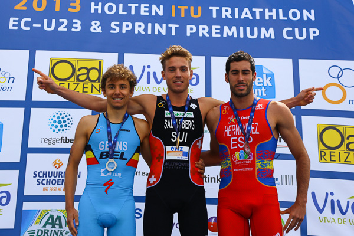

Jelle Geens gaf zaterdag op het EK Triatlon voor beloften zijn visitekaartje af in het Nederlandse Holten. De nieuwkomer bij SMO-Specialized kende een rustige seizoensstart maar wist op het juiste moment te pieken richting zijn eerste seizoensdoel, het EK. Met een selectie voor het WK in Londen op zak, bouwt hij met een trainingsstage terug op richting de tweede seizoenshelft.
Ook zijn teamgenote, de Nederlandse Danne Boterenbrood liep zich in Holten in de kijker en pakte haar eerste ETU winst. Haar verslag kan je nalezen op haar persoonljke website.
Hieronder kan het persoonlijk wedstrijdverslag lezen van de vice Europees kampioen.
Een schitterend weekend voor onze atleten, proficiat!
Het Europees kampioenschap, niet zoals de voorbije 2 jaar bij de junioren maar deze keer bij de belofte, vond plaats in het Nederlandse Holten.
Eén keer stond ik al aan de start in Holten dit was vorig jaar bij de ETU junior cup. Toen verloor ik de spurt voor de eerste plaats.
Dit jaar waren mijn verwachtingen iets minder groot dan mijn tweede plaats van vorig jaar. Aangezien ik als eerstejaars belofte moest opboksen tegen triatleten die 3 jaar ouder zijn. Hoe dan ook hing alles af van mijn zwembeurt. We stonden aan de start met 3 Belgen, buiten me zelf deden ook Marten Van Riel (Team185) en Peter Denteneer (Team185) mee.
Ik stond, door mijn tamelijk goede startnummer van 23, dicht bij de goede zwemmers. In het begin van het zwemmen was het meer vechten dan zwemmen maar ik kwam er goed doorheen en had een heel goede eerste boei. In het terugkeren naar het land in de eerste ronde kon ik nog goed opschuiven. Vooraf had ik me mentaal proberen voor te bereiden op uit het water komen na de eerst van twee zwemtoeren. Ik dacht dat de eerste atleten al reeds terug moesten ingedoken zijn en bezig zijn aan hun tweede zwem toer maar tot mijn verbazing zag ik de eerste atleten niet veel voor mij lopen. Perfecte eerste zwemronde dus. Nu moest ik deze positie zien vast te houden in de tweede ronde. Toen ik terug in het water dook zag ik het nummer 225 rechts van mij zwemmen. Deze nummer hoorde bij mijn kamergenoot Peter Denteneer, een goede zwemmer en dus besloot ik om hem te volgen in de tweede ronde. Ik kwam als ongeveer 15 de op het droge en na een goede wissel zat ik meteen in het eerste groepje. Ik besloot om meteen kei hard mee op kop te rijden zodat enkele goede lopers niet mee waren. Al snel hadden we 30 seconde en eens we op de plaatselijke toer waren besloot ik wat meer in de buik van onze 25 koppige kopgroep te rijden. Ik paste de ‘De Cuyper’ truk toe op de Holterberg: van voor beginnen en me tijdens de klim geleidelijk laten uit te zakken om zo weinig mogelijk energie te verspelen. De laatste ronde deed ik dit niet en zo kwam ik als een van de eerste in T2. Uit de wisselzone waande ik me even in Pontevedra 2 jaar geleden, toen ook kwamen Justus Nieschlag en ik samen uit T2 met een kleine voorsprong op de rest. Als snel kwamen er andere triatleten aansluiten en zette ik me op kop. Ik vond niet dat het aan mij was om het tempo hoog te leggen en dus liep ik niet vol door. Dit deed Salvisberg wel. Hij kwam snel voorbij maar ik kon hem wel volgen, toch voor even want na 2 kilometer merkte ik dat ik dit tempo geen 10 kilometer kon volhouden en schakelde ik een versnelling terug. Ondertussen had ik al een mooie voorsprong op het groepje dat voor plaats 4 liep. Maar de Spanjaard Vicente Hernandez, die een minder snelle wissel had, volgde op een 5-tal seconden. Ik kon mijn voorsprong op hem niet vergroten maar hij kwam ook niet terug op mij en zo liepen we voor enkele kilometers op 5 seconde van elkaar. Tot hij uiteindelijk met een 3 kilometer te gaan toch de aansluiting wist te maken, mede doordat ik mijn tempo wat liet zakken om op de sprint te gokken. Ik zette me in zijn zog en zo liepen we naar de aankomst. Ik wist van vorig jaar dat ik niet te snel mocht aangaan, zeker omdat het wind tegen was. Ik zette vol aan op een 200 meter van het einde. Maar hij gaf niet op, ik moest tot het uiterste blijven gaan tot de laatste meters om zo als tweede over de finish te komen.
Nooit had ik verwacht tweede te worden. Mijn ambitie was een top tien maar dan moest alles goed mee zitten.
Vandaag ging alles perfect: ik zwom zoals nooit eerder, fietsen ging makkelijk en in het lopen had ik een super gevoel.
Nu heb ik nog 3 jaar de tijd om 1 plaats beter te doen.
Groeten,
Jelle